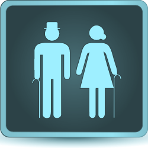

Notre expertise
Les services OKILYS
OKILYS évalue les besoins de ses clients et mobilise l'expertise la plus adaptée pour la bonne réalisation de leurs études : activités Start-Up et Réglementaires, aide à la création des outils et documents d'études, gestion, suivi et coordination des centres investigateurs, Clinical Oversight…
L'expertise OKILYS
Une expertise qualifiée, adaptée à chaque étude
Vous êtes un Laboratoire Pharmaceutique, une Biotech, une CRO, un Hôpital,… et recherchez une expertise qualifiée en essais cliniques, adaptée aux besoins de vos études en cours ou à venir ?
OKILYS évalue vos besoins puis mobilise l'expertise la plus adaptée à vos études : gestion et suivi des centres investigateurs, activités Start-Up et Règlementaires, coordination d'essais cliniques (Clinical Trial Lead/Manager), supervision qualité des prestataires (Clinical Oversight),…
OKILYS assure le suivi rigoureux de chaque mission, de son cadrage à sa clôture.
Le contexte global
De la molécule au médicament
Les études cliniques s'inscrivent dans un long processus de développement, strictement encadré, qui mène une molécule candidate jusqu'au patient.
Recherche préclinique
Criblage de milliers de molécules · études in vitro et in vivo
Phase I
Tolérance et sécurité · quelques dizaines de volontaires sains
Phase II
Efficacité et dose optimale · quelques centaines de patients
Phase III
Confirmation à grande échelle · milliers de patients, multicentrique
AMM
Autorisation de Mise sur le Marché · EMA / ANSM
Phase IV
Pharmacovigilance et données en vie réelle, après commercialisation
⏱ Un parcours d'environ 10 à 15 ans au total
End-to-end
Nos expertises, de la conception à la clôture
Chaque barre indique les étapes de l'étude couvertes par un champ d'intervention d'OKILYS.
1. Conception
Conseil stratégique selon le type d'essai, protocole & synopsis, ICF : rédaction, adaptation pays, vérification des traductions françaises (FR, BE, CH, LU…), eCRF, CTMS, outils patients
2. Sélection des centres
Choix des pays et des centres investigateurs : faisabilité, visites de sélection
3. Préparation
Collecte des documents essentiels des centres, négociation des contrats & budgets, préparation des dossiers de soumission
4. Soumissions
Stratégie de soumission selon le type d'essai · Règlement UE : CTIS Part II · Réglementations nationales : ANSM & CPP (FR), AFMPS & Comités d'éthique (BE) — initiales & amendements, jusqu'à la Greenlight (autorisation + contrat signé)
5. Mise en place
Visites de mise en place, formation des équipes, activation, 1er patient
6. Conduite & suivi
Recrutement des patients, visites de monitoring & de boosting du recrutement, communication étroite & escalation, qualité des données, eTMF, gestion des risques & déviations
7. Clôture
Visites de clôture des centres, résolution des dernières requêtes, retours des traitements & du matériel, réconciliation & archivage du TMF/eTMF, bilan de l'étude
Pour tout autre besoin, je suis à votre écoute pour évaluer les possibilités de travailler ensemble.
Nous contacterDomaines d'expertise
Aires thérapeutiques, populations & interventions non médicamenteuses
Nous intervenons sur des essais médicamenteux, des dispositifs médicaux et des Interventions Non Médicamenteuses (INM), dans de nombreuses aires thérapeutiques.
Aires thérapeutiques
 Oncologie
Oncologie Cardiologie
Cardiologie Endocrinologie
Endocrinologie Pneumologie
Pneumologie Gastro-entérologie
Gastro-entérologie Neurologie
Neurologie Dermatologie
DermatologiePopulations spécifiques
 Pédiatrie
Pédiatrie Gynéco-Obstétrique
Gynéco-Obstétrique
GériatrieSecteurs d'intervention